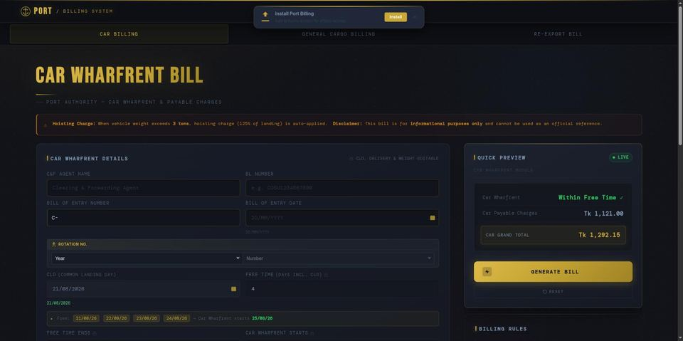
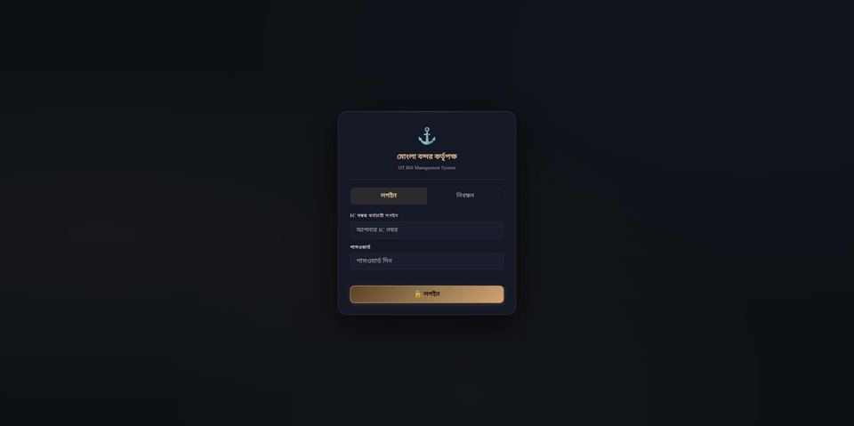

MD Samiul Alam Sumel
AI Product Engineer
Port & Logistics Domain · React, Next.js, Node.js & MongoDB
I find a real operational problem, design the system, build it with AI-assisted development, then rebuild it independently from memory until I own every line. 12+ years inside Mongla Port Authority gives me problems no outside developer would even see. 3 self-built tools — billing, vehicle tracking, payroll automation — are in daily production use there.
01 / Who I Am
About Me
I am an AI Product Engineer — I find a real operational problem, design the system around it, build with AI-assisted development, then rebuild the important parts independently until I own every line. Not a generalist developer, not a pure ops person: the rare combination of domain judgment and engineering execution.
I bring 12+ years of professional work experience as a Senior Outdoor Assistant at Mongla Port Authority — Bangladesh's second-largest international seaport — in wharfrent billing, cargo dwell time management, terminal operations, and C&F agent coordination.
I used that operational background to identify real workplace problems and built 3 self-initiated web applications — plain JavaScript/HTML/CSS at the time — that are still used daily by C&F agents and port staff. That is real, in-production software, not a class exercise. Alongside that operational work, I worked through a large part of an intensive, project-based full-stack curriculum — HTML, CSS, JavaScript (ES6+), React, React Router, part of Node.js/Express and Next.js, including authentication (JWT, Firebase) and deployment — before stepping away from the course to focus on shipping real projects.
I work requirement-first: I read the operational problem — which I can judge from 12 years inside port operations — decide what the system actually needs to do, then build and ship it, using AI-assisted development (Claude Code) as part of the build. On frontend and plain-JavaScript work I write and debug on my own; on backend and data work, AI assistance is genuinely part of how I get from requirement to working code. The How I Build section explains the discipline I use to close that gap, and the Roadmap shows where I actually am on it right now.
I'm not a bootcamp graduate and not a senior engineer — I am upfront about that. What I bring is 12+ years of professional discipline from a demanding operational job, a large chunk of self-directed full-stack study, and real shipped software.
My goal is a remote AI Product Engineer, Port/Logistics-Tech, full-stack, or web developer role — anywhere in the world, with no time zone constraints.
02 / How I Work
How I Build
Every project on this site was built with AI assistance. That's a plain fact, not a confession — Claude and similar tools are part of how I get from a requirement to working code. But using a tool isn't a skill. The skill is the workflow around it, and the discipline of actually owning what comes out of it.
Using Claude to write code is tool use, not a skill in itself. The real skill is the workflow: understand the requirement, research it, design the solution, specify it clearly, then build — with AI assistance where that's honest, on my own where I can.
A new piece gets built once with AI assistance to see the shape of it. Then I rebuild it from memory, no AI, on a timer, typing it myself. Then I explain it out loud as if teaching a junior developer. Until all three are done, I don't count it as learned.
"Build me a billing app" gets a weak result from any model. Business rules, the real data model, edge cases, and acceptance criteria stated up front get an accurate one — I treat specifying that context as its own deliberate skill, not an afterthought.
- Local dev environment and a real terminal, not a browser sandbox
- A meaningful git commit for every rebuilt piece
- No copy-paste during a rebuild — typed from memory, every time
- Timed practice, logged, so improvement is measurable over time
- CLI-first — git, npm, and deploy tooling by hand, not GUI shortcuts
- Every README splits what's AI-assisted from what's independently rebuilt
03 / Problem → Product
Featured Projects

Port Billing Calculator May 2026
Problem: Port billing system creates permanent entries — C&F agents had no way to estimate wharfrent charges before committing, causing billing disputes, excessive dwell time, and repeated counter visits.
Real-time advance wharfrent calculator: slab-based charge computation, VAT and levy calculation, inside/outside cargo split, hoisting charge auto-calculation, print-ready A4 output. Actively used by C&F agents at Mongla Port daily.

Daily Car Balance & Location Tracking ("carview")
Problem: Vehicle positions across warehouse, shed, and yard were recorded in one person's personal Excel file — invisible to all other staff, creating bottlenecks and single-person dependency.
Offline-first PWA tracking 8 port locations, with Cloudflare Worker + private GitHub repo sync, a Chart.js analytics dashboard (7 charts + KPIs), 13 report sections, and Excel export. Built for Mongla Port Authority's Traffic Department.

OT Bill Management System May 2026
Problem: Overtime billing was a fully manual Excel process — multi-step hourly rate calculations, date-wise OT entry, and final bill generation done by hand every cycle.
Staff enters an employee profile once; the system generates the complete final OT bill instantly with correct hourly rate, cumulative date-wise OT calculation, and A4 print-ready output.

Client Intake Form
Problem: Collecting project requirements from a client over email or chat is unstructured — details get missed, and following up to fill gaps wastes time on both sides.
Single-file, client-side project requirement intake form — structured questions, no backend required, and a mailto-based report so the completed brief lands directly in an inbox.

World Kitchen Atlas
Problem: A global culinary reference needs fast, structured browsing by continent and country, with an admin workflow to add and edit entries without touching code.
Next.js static-export site on Cloudflare Pages, with a Cloudflare Worker proxying a private GitHub data repo, admin login and CRUD, and a Durable-Object-backed visit counter.
JARVIS Source Available — No Live Demo
Problem: Commercial AI assistants lock you into one model, one vendor, and send every query off-device.
Self-hosted personal AI assistant with smart multi-model routing across Groq, OpenRouter, Claude, and Gemini (plus local Ollama), voice input/output, file/folder ingestion, and persistent cross-session memory. Runs on a personal NixOS machine.
The crane and container assembly moving through this page is a real, downloadable 3D model — export it as OBJ+MTL or GLB.
View & Download 3D Model ↗04 / Technical Stack
Core Competencies
Grouped by how I actually work with each: what I write and debug on my own, and what I build using AI-assisted development. Everything listed is either something I worked through in self-directed study or used in a public repo.
Domain & Port Operations
Frontend & JavaScript
React & Next.js
Backend, Data & Deployment
Course-covered and used in real projects; on backend and data work I lean on AI-assisted development to get from requirement to working implementation — the Roadmap section is how I'm closing that gap.
Linux & Automation (self-directed)
05 / Closing the Gap
Engineering Roadmap
A self-authored, phase-based plan for turning "built with AI assistance" into "built independently, AI or not." Each phase rebuilds a real piece of the shipped projects above from memory, with a concrete milestone before moving on.
- JavaScript/TypeScript, atomic breakdown
- DSA basics
- Git CLI workflow
Milestone: rebuild core JS/TS syntax from memory, no AI, timed.
- Rebuild PortBill/OTBill backends independently
- JWT + bcrypt by hand
- REST API design
- PostgreSQL schema & migrations
Milestone: a REST API from scratch, explained with no notes.
- AWS — IAM, EC2, S3, Lambda, RDS
- Dockerfile & docker-compose
- GitHub Actions pipeline
Milestone: a project deployed to AWS with a passing CI pipeline.
- LLM API integration, in depth
- RAG — chunking, embeddings, vector DBs
- Agent orchestration
Milestone: JARVIS architecture explained end-to-end, plus a new feature added independently.
- Per-project READMEs: AI-assisted vs. self-written
- Clean, meaningful commit history
Milestone: every project explainable from memory in 5 minutes.
- Weekly mock technical interviews
- Small-scale system design practice
Milestone: a polished CV, LinkedIn, and a working interview rhythm.
06 / Where the Problems Come From
Port Operations Background
Every project above started as a problem I saw first-hand doing this job — not a spec handed to me. That's the part an outside developer can't shortcut.
Senior Outdoor Assistant — Port Operations & IT Systems
Nov 2017 – Present- Manage end-to-end wharfrent billing cycle — slab-wise charge computation, VAT and levy calculation, inside/outside cargo split, and final billing issuance for active C&F agents — independently built and deployed portbill, now used daily by the billing desk.
- Provide advance billing estimates to C&F agents, enabling accurate payment planning and reducing vehicle dwell time.
- Track cargo and vehicle positions across warehouse, shed, and yard terminal locations in real time — the trigger for building carview, now the Traffic Department's shared, version-controlled tracking system.
- Maintain daily and monthly revenue reports, cumulative income statements, and vehicle balance records for port authority management.
- Generate car import/delivery and jetty statistics reports used for operational planning and port authority audits.
- Independently identified critical inefficiencies in manual billing, overtime payroll, and vehicle tracking workflows — designed and deployed 3 live web applications now used daily by C&F agents and port staff.
- Built with plain JavaScript/HTML/CSS and deployed using AI-assisted development as a productivity tool, while working through a structured full-stack curriculum in parallel.
- Maintain an active public GitHub portfolio (github.com/samiulAsumel) demonstrating continuous technical growth.
Junior Outdoor Assistant — Port & Terminal Operations
Nov 2013 – Nov 2017- Assisted in port inspections, vessel operations, and cargo handling under senior supervision.
- Monitored cargo dwell time and vehicle positioning across all terminal locations.
- Built foundational expertise in wharfrent billing, maritime logistics, and customs clearance that underpins all later self-initiated digital work.
07 / Freelance & Contract Work
Services I Deliver
Send the workflow and the problem — I identify what's actually going wrong, design the solution, and build and deploy it using modern full-stack tools and AI-assisted development.
💻 Full-Stack Web Apps
React/Next.js on the frontend, Node.js/Express + MongoDB on the backend — REST APIs, JWT/Firebase authentication, and Stripe payments when the job needs them.
✓ 3 apps in daily production use; React/Next.js from World Kitchen Atlas
📊 Billing & Tracking Dashboards
Custom billing calculators, tracking dashboards, and operational tools — the same kind of tool I built to solve real problems at my own workplace.
✓ Built for real daily use, not a demo
⚓ Port & Logistics Workflow Digitisation
Turning paper-based or Excel-based port and logistics workflows into deployed, team-wide web tools, backed by first-hand operational knowledge.
✓ Proven with 3 tools converted from manual/Excel processes
08 / Self-Directed Practice
Linux & Automation Practice
Bash Automation & Linux Practice
Self-directed practice building production-style Bash automation for deployment, SSL certificate renewal, and log/security monitoring — daily Linux (Ubuntu) user, scripting and administering my own systems outside of any certification track.
Self-driven learning, not job-critical production work — listed for transparency only.
09 / Active Growth
Active Growth
The Odin Project & Full Stack Open
Self-paced study for code comprehension, not a second certificate. Starting from The Odin Project's "Intermediate HTML and CSS" course, then continuing into Full Stack Open (University of Helsinki) — JavaScript fundamentals, Node.js/Express in depth, testing, and Git workflow.
In progress — listed for transparency, not counted as a current qualification.
Personal AI Product Engineering Curriculum
A self-authored, multi-phase curriculum pairing AI product strategy with hands-on engineering — AI fundamentals, context engineering, product discovery, full-stack AI product development, and deployment. Follows the Build → Rebuild → Explain discipline from How I Build.
Self-directed and ongoing — not a certification or completed course, listed for transparency.
10 / Background
Education
11 / Let's Connect
Get In Touch
I'm actively seeking a remote AI Product Engineer, Port Operations Technologist, Logistics Systems Engineer, or Full-Stack Developer role — and open to freelance and contract work — with organizations anywhere in the world. No time zone constraints.
With 12+ years of professional port operations experience and self-directed full-stack study, I bring a combination few candidates can offer — domain judgment and engineering execution, proven by 3 self-built tools in daily production use, not just studied.